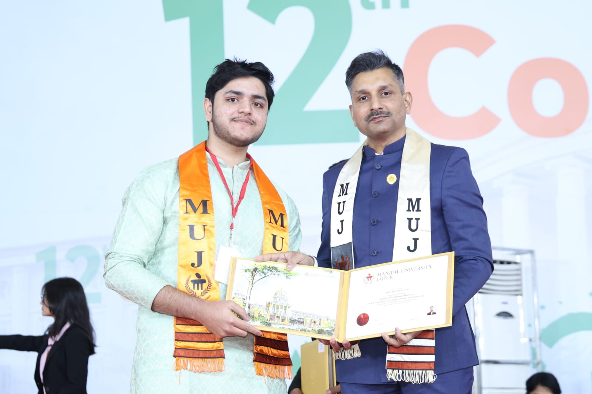
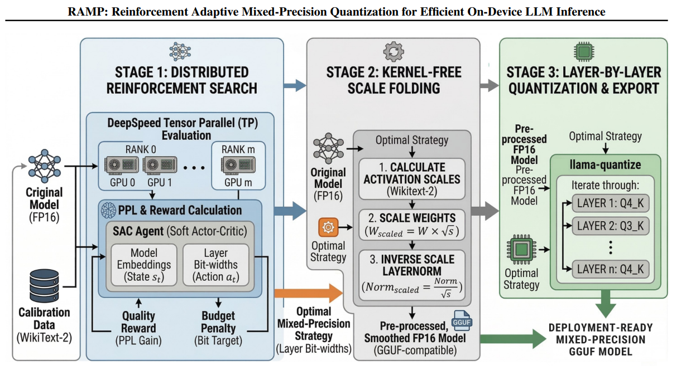
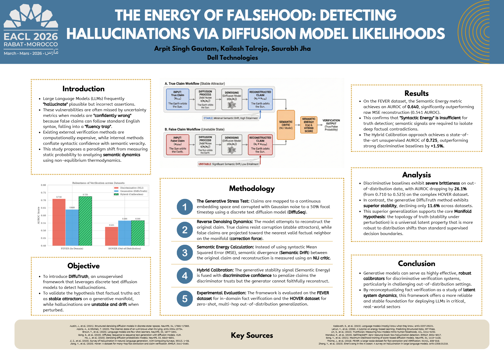
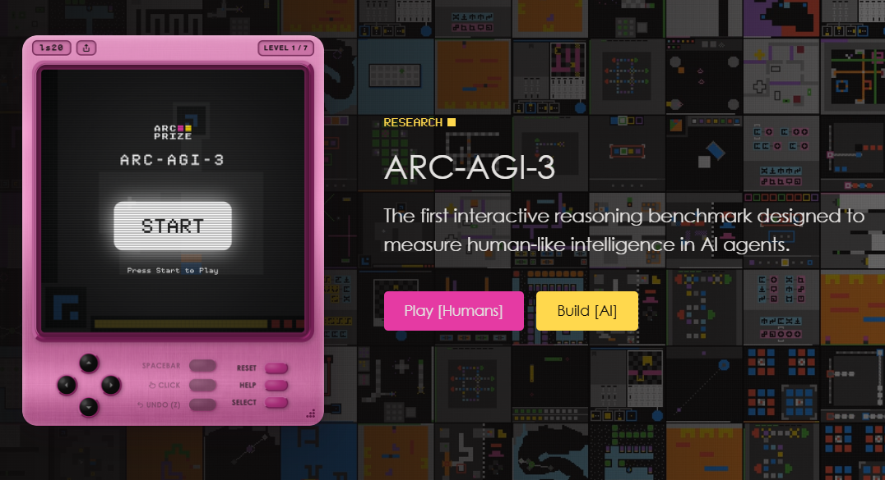

Hello, I'm Arpit Singh Gautam
I am a Data Scientist working in the CSG CTO Lab at Dell Technologies, where I focus on optimization, efficient inference, and scalable AI systems. My work spans generative AI, reinforcement learning, neural architecture search, and distributed model serving — with an emphasis on building robust, efficient systems that work at scale.
I have developed systems for disaggregated serving, speculative decoding, and KV cache optimization. My work has been accepted at AAAI, ICCCNT (IIT Indore), and the FEVER Workshop @ EACL 2026 (now on ACL Anthology).
Research interests: Systems for ML & Distributed AI · Efficient and Hardware-Aware Inference · Reasoning-Centric LLMs · Reinforcement Learning for Foundation Models

Recent Updates
Papers · Projects · Talks · Blog posts — all in one place.



